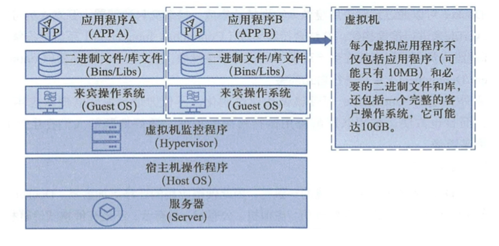
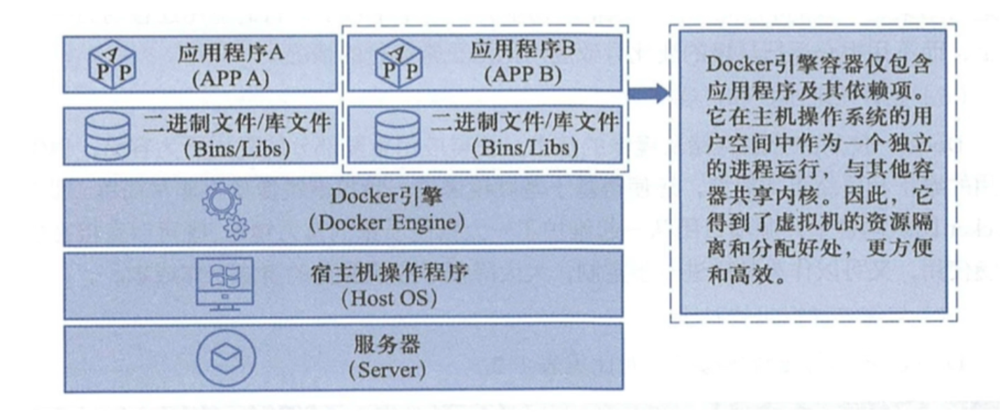

2022-04-15
容器、代理与集群
修改于: 2022-04-15暂时只写了docker与nginx, 集群待补充
什么是虚拟化技术？
- 维基百科中的解释是这样的:
- 虚拟化（技术）是一种资源管理技术，是将计算机的各种实体资源（CPU、内存、磁盘空间、网络适配器等）， 予以抽缴、转换后呈现出来并可供分割、组合为一个或多个电脑配置环境。
对于一台计算机，我们可以简单的划分为三层：从下到上依次是
- 物理硬件层
- 操作系统层
- 应用程序层
容器和虚拟机差异
容器技术的演变:
纯物理机 ----> 物理机上多VMWare虚拟机 ----> 容器
浪费资源 节省, 也有限度 轻量级(有时候只想要一个mysql这种, 可能还想要多个版本共存)
不易拓展迁移 迁移方便 更高效利用系统资源
还是比较重量级
注解
有个误解, Docker不完全代表容器; Docker只是实现了容器技术的一种方式
虚拟机工具:
- WMVare WorkStation (个人学习使用), 仅支持Windows
- VMVare esxi (企业版虚拟化); 高性能服务器结合，进行服务器资源虚拟化
- KVM, Linux下虚拟工具
- 虚拟机技术
虚拟机是虚拟出一套硬件，在其上面运行一个完整的操作系统， 例如我们使用KVM，指定系统镜像然后装系统，最终可以使用，在该系统上再运行所需的应用程序。
KVM创建虚拟机时，若指定较少的cpu，内存，硬盘等资源，虚拟机性能较低, 业务支持不好。
- 容器技术
容器内的应用程序直接运行在宿主机的内核上，容器内没有自己的内核， 也没有对硬件进行虚拟，因此容器比起虚拟机更为轻便。
- 容器对比KVM的好处
- 容器能够提供宿主机的性能，而kvm虚拟机是分配宿主机硬件资源， 性能较弱 •同样配置的宿主机，最多可以启动10个虚拟机的话，可以启动100+的容器数量;
- 启动一个KVM虚拟机，得有一个完整的开机流程，花费时间较长，或许得20S，而启动一个容器只需要 1S;
- KVM需要硬件CPU的虚拟化支持，而容器不需要;
- docker更高效的利用系统资源
- 容器不需要进行硬件虚拟化以及运行一个完整操作系统的额外开销， docker对系统资源的利用率更高，无论是应用执行， 文件存储，还是在内存消耗等方面，都比传统虚拟机更高效。 因此一个同样配置的主机，可以运行处更多数量的容器实例。
集群、分布式、微服务的区别
- 集群
- 将同一份项目或者系统, 物理部署到多台机器上分流, 物理上提高可用性
- 分布式
将项目, 垂直/水平 拆分为多个子模块, 分开部署
水平拆分: 根据“分层”的思想进行拆分。 比如前后端分离就是将 前端表示层 单独拆出来
垂直拆分: 根据业务进行拆分。 例如，可以根据业务逻辑，将“电商项目”拆分成“订单项目”、“用户项目”和“秒杀项目”。 显然这三个拆分后的项目，仍然可以作为独立的项目使用。像这种拆分的方法，就成为垂直拆分。
- 微服务
对于分布式的子模块, 进行更细粒度的拆分. 且在当前流程下不存在更细粒度的拆分
例如，以上“订单项目”本来就是垂直拆分后的子项目， 但实际上“订单项目”还能进一步拆分为“购物项目”、“结算项目”和“售后项目”
Nginx常用命令
一览:
# 快速关闭Nginx，可能不保存相关信息，并迅速终止web服务 nginx -s stop # 平稳关闭Nginx，保存相关信息，有安排的结束web服务 nginx -s quit # 因改变了Nginx相关配置，需要重新加载配置而重载 nginx -s reload # 重新打开日志文件 nginx -s reopen # 为 Nginx 指定一个配置文件，来代替缺省的 nginx -c filename # 不运行，而仅仅测试配置文件。nginx 将检查配置文件的语法的正确性，并尝试打开配置文件中所引用到的文件 nginx -t # 显示 nginx 的版本 nginx -v # 显示 nginx 的版本，编译器版本和配置参数 nginx -V # 格式换显示 nginx 配置参数 2>&1 nginx -V | xargs -n1 2>&1 nginx -V | xargs -n1 | grep lua